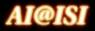
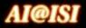

Research Overview
[Intelligent User Interfaces, Semantic Workflows, Discovery Informatics, Provenance and Trust, Linked Data]
Projects
[Wings, Organic Data Science, OntoSoft, Geoscience Papers of the Future, DISK]
People
[Yolanda Gil, Jihie Kim, Varun Ratnakar, Ricky Sethi, Hyunjoon Jo]
Publications
[All publications by the team]
Demo Gallery !
[Videos overviewing projects, links to live demos]
News
- May 2017: Workshop on Analyzing Artistic Style using our WINGS workflow system
- April 2017: Our paper on Quantifying Reproducibility inaugural Datasets Collection for PLOS ONE's first ten years
- February 2017: Tutorial at AAAI 2017: Learn to Write a Scientific Paper of the Future: Reproducible Research, Open Science, and Digital Scholarship
- December 2016: Yolanda Gil elected Fellow of the Association for Computing Machinery (ACM)
- October 2016: Kicking off the Scientific Paper of the Future Initiative with a training session at the Stanford Center for Reproducible Neuroscience
- September 2016: Our long-time collaborator Daniel Garijo joins the group as a postdoctoral researcher
- August 2016: Our summer interns worked on data science topics
- July 2016: Yolanda Gil elected President of the Association for the Advancement of Artificial Intelligence (AAAI)
- June 2016: First Summer School on Intelligent Systems for Geosciences
- October 2015: Yolanda Gil is invited to speak at the 50th Anniversary of the founding of the Department of Computer Science at Carnegie Mellon University
- September 2015: Yolanda Gil speaks in a panel on Artificial Intelligence at the DARPA Wait What Conference
- August 2015: Our summer interns developed curriculum to teach data science
- March 2015: Kicking off the Scientific Paper of the Future Initiative
- September 2014: Our summer interns had productive contributions to developing infrastructure for science
- August 2014: A week-long field trip to understand the technical challenges of field science for geologists
- July 2014: Our contributions to using the W3C PROV standard for geospatial data in an Open Geospatial Consortium technical report
- April 2014: Published Ten simple rules for the caring and feeding of scientific data
- February 2014 - Our Wings semantic workflow system is part of the original collection of DARPA open source projects
- [show older news]
- December 2013 - Summer 2014 Undergraduate research Internship Opportunities !!
- November 2013 - Quantifying Reproducibility in Computational Biology: The Case of the Tuberculosis Drugome - Now Published!
- October 2013: Our work was highlighted at the Semantic MediaWiki Conference with a keynote talk, a presentation, and a demonstration.
- September 2013 - We released the new all-java version of the WINGS source code on github: https://github.com/IKCAP/wings
- April 2013 - We are involved with the W3C Provenance Working Group, just announced the final release of the PROV standard
- February 2013 - Our Wings workflow system is now integrated with the Apache OODT execution framework
- September 2012 - Yolanda Gil coedited the EarthCube Roadmap for Workflows in Geosciences just released
- August 2012 - Yolanda Gil coedited the report of the NSF Workshop on Discovery Informatics just released
- July 2012 - Yolanda Gil is elected a fellow of the Association for the Advancement of Artificial Intelligence
- March 2012 - An article in The Atlantic about our recent publication on "Requirements for provenance on the Web"
- February 2012 - Discovery Informatics takes off with an NSF workshop, join us at the AAAI Fall Symposium
- December 2011 - We are involved with the W3C Provenance Working Group, just announced the first release of its PROV standard
- October 24, 2011: Our paper on "Mind your metadata: Exploiting Semantics for Configuration, Adaptation, and Provenance in Scientific Workflows" is nominated for Best In-Use Paper at the ISWC conference and selected as runner-up
- October 14, 2011: Ricky Sethi receives a prestigious CCC Computing Innovation Fellowship
- September 9, 2011: Daniel Garijo, a summer intern, wins the 2011 Triplification Challenge
- February 15, 2011: Our paper on learning procedures by integrating demonstrations and instructions is selected finalist for best paper at the IUI conference
- December 21, 2010: The W3C Provenance Incubator Group, chaired by Yolanda Gil, releases its Final Report
- November 11, 2010: Shortipedia was selected as a finalist in the competitive Semantic Web Challenge, where it won Third Prize
- October 1, 2010: The Wings Workflow System is released open source
- September 3, 2010: BibBase Triplified wins Honorary Mention in the 2010 Triplification Challenge
- July 1, 2010: Yolanda Gil is elected Chair of ACM SIGART, the ACM's Special Interest Group in Artificial Intelligence
- May 18, 2010: Christian Fritz receives Honorable Mention for the 2010 ICAPS Best Dissertation Award
- March 17, 2010: Release of Wings Sandbox
- February 19, 2010: Demonstration of learning Wings workflows from natural language input using the new TellMe system
- March 17, 2010: Release of Wings Sandbox.
- February 19, 2010: Demonstration of learning Wings workflows from natural language input using the new TellMe system.
- January 14, 2010: Wings workflows reused to reproduce previously published results in population genomics.
- November 3, 2009: Wings workflows used for student assessment in online learning.
- June 11, 2009: Workflow site for the Center for Collaborative Genetic Studies on Mental Disorders (CGSMD) is launched.
- March 3, 2009: Release of a collaborative to-do application for FaceBook.
- October 20, 2008: Release of a to-do application for FaceBook.
- July 13, 2008: Tutorial on Computational Workflows for Large-Scale AI Research at AAAI-08.
- July, 2007: The Wings/Pegasus workflow system is used for large-scale earthquake simulations forseismic hazard analysis.
- January, 2006: Learner's knowledge repository makes the list of the 100 largest owl documents in the Semantic Web.
- July 2005: Learner is installed in a museum exhibit to collect common knowledge from museum goers.
- More Details >>>

 
